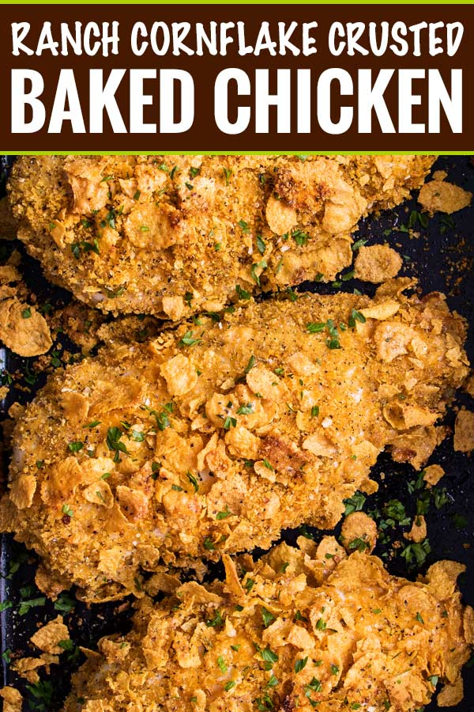

Cornflake Ranch Chicken
Home
Chicken Penne Alfredo
Eggroll in a Bowl

Description
This isn't your standard cornflake baked chicken recipe, I promise. The chicken is coated in ranch dressing, then pressed into a cornflake mixture that's spiced up so it's full of crunchy flavor.
Ingredients
- 4 boneless skinless chicken breasts, trimmed of excess fat
- 1 cup ranch dressing
- 3 cups crushed cornflakes
- 1 1/2 Tbsp dried Italian seasoning
- 1 1/2 tsp garlic powder
- 1/2 tsp paprika
- salt and pepper, to taste
Steps
- Preheat oven to 400 F degrees. Lightly grease a 9x13" baking dish or rimmed baking sheet and set aside.
- In a shallow bowl, add ranch dressing. In a separate shallow bowl, add cornflakes, Italian seasoning, garlic powder, paprika and salt and pepper.
- Dip chicken in ranch dressing, shaking off any excess, then dip in cornflake mixture. I pat the cornflake crumbs into the chicken to make sure they're well coated.
- Bake for 30-35 minutes, until juices run clear and a meat thermometer reads 165 F degrees.